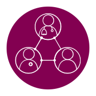
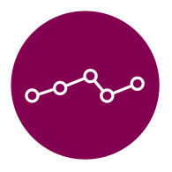
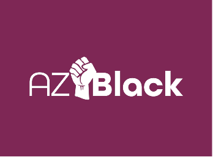
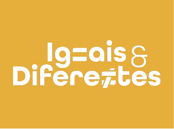
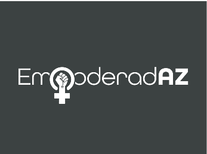
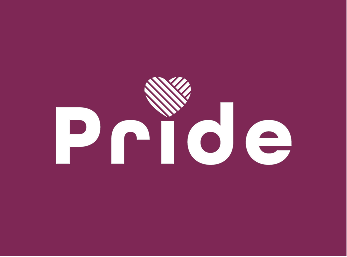
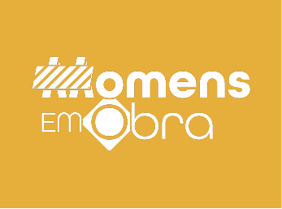
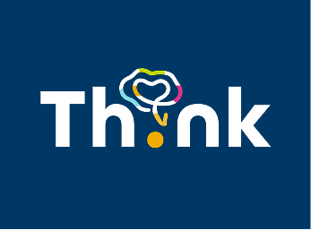

Cultivar uma cultura de inclusão e pertencimento
Desenvolver uma liderança inclusiva e um ambiente de confiança, onde diferentes perspectivas sejam valorizadas e todos tenham oportunidade de contribuir.
Por isso, valorizamos um ambiente colaborativo onde todos são respeitados e incentivados a contribuir com seu valor.
Nossa estratégia de Inclusão e Diversidade reflete o compromisso de construir uma cultura diversa, equitativa e guiada por propósito.
Buscamos refletir a pluralidade da sociedade brasileira, fortalecendo o senso de pertencimento e cultivando um ambiente de escuta e respeito.
Assim, reafirmamos o compromisso de transformar, juntos, a vida das pessoas e contribuir para uma sociedade mais justa e saudável.

Desenvolver uma liderança inclusiva e um ambiente de confiança, onde diferentes perspectivas sejam valorizadas e todos tenham oportunidade de contribuir.
Oferecer oportunidades equitativas de crescimento em um ambiente diverso e respeitoso, consolidando o senso de pertencimento em uma equipe diversificada.

Refletir a diversidade da sociedade brasileira e contribuir para avanços na política pública, sendo protagonista no diálogo sobre inclusão na saúde.

Este grupo de afinidade é dedicado a promover um ambiente diverso e inclusivo, com foco no letramento antirracista e na igualdade de oportunidades. As ações e workshops do grupo buscam refletir a diversidade racial da sociedade brasileira em todos os níveis hierárquicos da AstraZeneca.

Dedicados à inclusão de pessoas com deficiência, este grupo da AstraZeneca valoriza o potencial desses profissionais e apoia iniciativas de diversidade, como a luta anticapacitista, fortalecendo um ambiente acessível e inspirador no trabalho.

Dedicado à equidade de gênero, o grupo EmpoderadAZ promove o empoderamento e o crescimento profissional das mulheres, ampliando sua participação e liderança na AstraZeneca.
Este grupo é dedicado à saúde mental, promovendo cuidado, conhecimento e um ambiente psicologicamente seguro, incentivando o bem-estar e apoio mútuo entre os colaboradores.

O grupo Pride fortalece o compromisso da AstraZeneca com o movimento LGBTQIAPN+, criando um ambiente acolhedor e inclusivo para todos, independentemente de gênero ou orientação sexual. Suas ações focam na importância de ter aliados à causa, na valorização da autenticidade e no estímulo ao protagonismo dos colaboradores.

O grupo Homens em Obras, composto por colaboradores da AstraZeneca, promove uma cultura com menos desigualdade de gênero, ajudando o público masculino a se autoconhecer e a reconhecer seus privilégios. As ações do grupo focam na importância da atenção à saúde masculina, além de incentivar discussões sobre paternidade ativa e quebra de paradigmas.

O grupo Think concentra-se em neurodiversidade, atuando como um espaço de discussão e apoio para neurodivergentes, incluindo aqueles com TDAH, dislexia, autismo e outras condições. Suas ações destacam a importância da visibilidade da neurodivergência, promovendo maior compreensão e aceitação dentro da AstraZeneca.
A AstraZeneca do Brasil reconhece a relevância e importância da abordagem que a nova Lei de Igualdade Salarial traz para a sociedade, o que se alinha ao nosso olhar mais abrangente de diversidade e inclusão, além da equidade de gênero.
Ao compararmos os resultados da AstraZeneca Brasil em relação às demais empresas do país (em diversos setores da economia), confirmamos que nossas ações de diversidade e inclusão têm surtido efeito, nos posicionando em um cenário positivo e eventuais diferenças estão relacionadas a questões demográficas.
Destacamos que prezamos pela igualdade de oportunidades entre mulheres e homens no ambiente de trabalho. E nos sentimos privilegiados em ter grande parte das nossas posições de liderança ocupadas por mulheres.
Para mais detalhes e informações sobre o relatório emitido pelo governo, clique no botão abaixo: